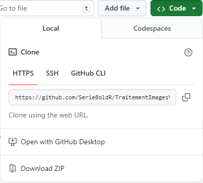

| Matrice | Points | Lignes | Polyg. | Raster |
|---|---|---|---|---|
| Partage d’un nœud (Queen) | X | X | X | |
| Partage d’un segment (Rook) | X | X | X | |
| Partage d’un nœud et ordre d’adjacence (Queen) | X | X | X | |
| Partage d’un segment et ordre d’adjacence (Rook) | X | X | X | |
| Connectivité selon la distance | X | X | X | X |
| Inverse de la distance | X | X | X | X |
| Inverse de la distance au carré | X | X | X | X |
| Nombre de plus proches voisins | X | X | X | X |
1 Importation et manipulation de données spatiales
Dans le chapitre, nous abordons…
Liste des packages utilisés dans ce chapitre
- Pour importer et manipuler des fichiers géographiques :
-
sfpour importer et manipuler des données vectorielles. -
terrapour importer et manipuler des données matricielles.
-
- Pour construire des cartes et des graphiques :
-
tmapest certainement le meilleur package pour la cartographie. -
ggplot2pour construire des graphiques.
-
1.1 Bases de Quarto…
Voici comment faire une liste :
- texte en gras
-
texte en italique
- Gras et italique
- R2 et NO2
- Petites majuscules
- Pour un lien Web, Département de géomatique appliquée.
Voici comment intégrer des équations LaTeX. La formule de la distance euclidienne (équation 1.2). Pour écrire directement une équation dans le texte, il suffit de \(E = mc^2\).
\[ d_{ij} = 2R \cdot \text{ arcsin} \left( \sqrt{\text{sin}^2 \left( \frac{\delta _i - \delta _j}{2} \right) + \text{cos }\delta _i \cdot \text{cos }\delta _j \cdot \text{sin}^2 \left( \frac{\phi _i - \phi _j}{2} \right)} \right) \tag{1.1}\]
\[ d_{ij} = \sqrt{(x_i-x_j)^2+(y_i-y_j)^2} \tag{1.2}\]
- Intégrer une figure (image) et l’appeler dans le texte (figure 1.1). À la figure 1.1, … Notez que la numérotation des figures, des tableaux, des équations est automatique.

- Les références sont au format BibTeX. Par exemple, vous pouvez les télécharger de Google Scholar et les intégrer à la fin du fichier references.bib. Voici comment intégrer des références (Mather et Koch 2022; Richards, Richards et al. 2022). Selon Ferdinand Boon et Guy Rochon (1992).
Le code R ci-dessous permet de faire un tableau dans un chunk! Pour appeler le tableau (tableau 1.1).
1.2 Importation d’images
1.2.1 Manipulation d’une matrice
1.2.2 Formats de données
Voici comment faire une liste
- Format RVB
- jpeg
- png
- GeoTiff
- COG
- NetCDF
- HDF5
1.2.3 Métadonnées des images
1.2.4 Données en géoscience
Calibration, unités, données manquantes, données éparses.
netcdf, xarray, GRIB.
Données météos, exemple avec SWOT.
1.3 Importation de données vectorielles
1.3.1 Importation d’un fichier shapefile
1.3.2 Importation d’une couche dans un GeoPackage
1.3.3 Importation d’une couche dans une geodatabase d’ESRI
1.3.4 Importation d’un fichier shapefile
1.4 Manipulation d’images
1.4.1 Mosaïquage, masquage et découpage
1.4.2 Changement de projection cartographique
1.4.3 Recalage d’images et co-registration
1.4.4 Requêtes attributaires
1.5 Manipulation de données vectorielles
1.6 Quiz de révision du chapitre
Laquelle de ces fonctions permet de changer la projection cartographique d’une couche géographique?
Relisez au besoin le début de la section 1.3.
Laquelle de ces fonctions n’est pas une fonction géométrique sur une couche?
Relisez au besoin la section 1.3.
Comparativement à l’algorithme de Douglas et Peucker, que permet l’algorithme de Visvalingam lors de la simplification des contours?
Relisez au besoin la section 1.3.2.
Quelles sont les quatre fonctions de mesures géométriques et de récupération des coordonnées géographiques?
Relisez au besoin la section 1.3.
Quelle est la différence entre les fonctions st_intersects(x, y) et st_intersection(x, y)?
Relisez le deuxième encadré à la ?sec-0126.
Laquelle des fonctions sf permet d’exporter des données vectorielles?
Relisez au besoin la section 1.5.
1.7 Exercices de révision
Exercice 1. À compléter
Correction à la section 8.1.1.
Exercice 2. À compléter
Correction à la section 8.1.2.
Exercice 3. À compléter
Correction à la section 8.1.3.